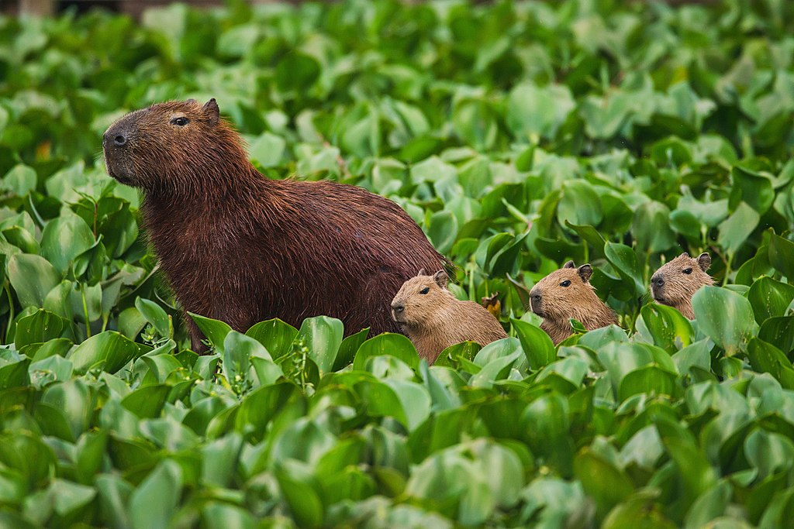
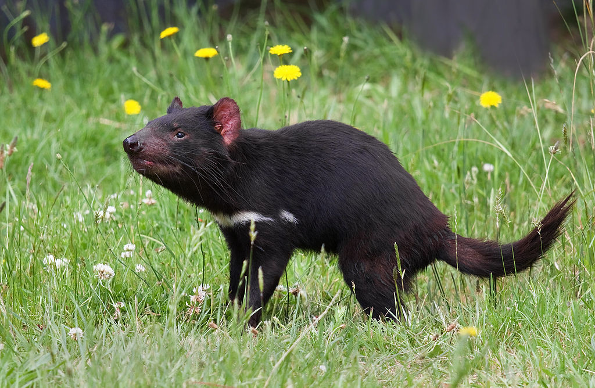
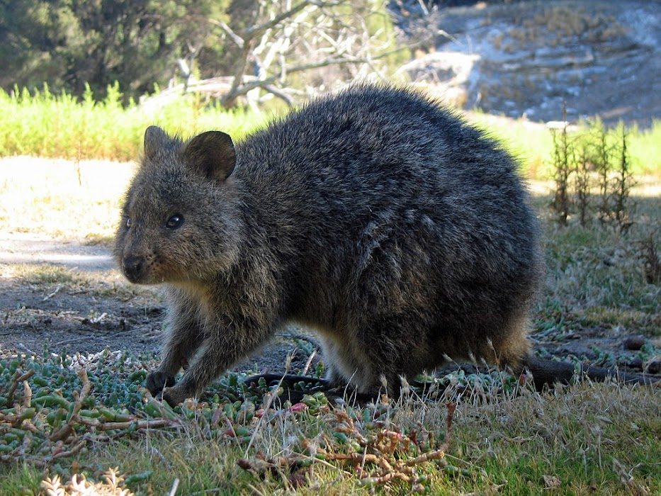
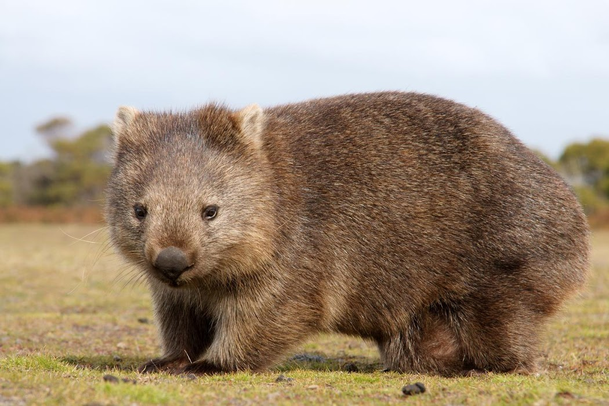

Los vombátidos (Vombatidae) son una familia de marsupiales diprotodontos, conocidos comúnmente como wómbats. Se encuentran solo en Australia, incluida Tasmania, y tienen la apariencia de un oso, pequeño y de patas muy cortas. Actualmente existen tres especies de wómbats con vida, todas las cuales miden alrededor de un metro y pesan entre 25 y 55 kg. Su color de pelo varía del beige al marrón y del negro al gris. Se considera que el pariente vivo más cercano de estas especies de wómbats es el koala, el cual destaca por haberse adaptado a la vida arborícola; en comparación, los wómbats son animales mucho menos especializados en cuanto a su dieta y modo de vida.

El capibara, carpincho, chigüire o perro coco (Hydrochoerus hydrochaeris)nota 1 es una especie de roedor de la familia de los cávidos, nativa de Sudamérica. Es el roedor viviente de mayor tamaño y peso del mundo, del género Hydrochoerus.2 El único otro miembro existente de ese género es el capibara menor (Hydrochoerus isthmius). Sus parientes cercanos incluyen a los conejillos de indias y los mocós, y está relacionado más lejanamente con el agutí, la chinchilla y el coipo. Habita humedales y bosques densos y vive cerca de cuerpos de agua. Es una especie muy social y se puede encontrar en grupos de hasta cien individuos, pero por lo general vive en grupos de diez a veinte individuos. El animal es cazado por su carne y piel y también por la grasa de su piel gruesa y grasosa

El diablo o demonio de Tasmania (Sarcophilus harrisii) es una especie de marsupial dasiuromorfo de la familia Dasyuridae. En la actualidad solo se encuentra en estado silvestre en la isla de Tasmania, al sur de Australia continental. Es el marsupial carnívoro de mayor tamaño existente en la actualidad, tras la extinción del lobo marsupial. Su tamaño es como el de un perro pequeño, con un cuerpo robusto y musculoso y su piel está cubierta de pelo negro. Se caracteriza por su desagradable olor, por su grito muy fuerte e inquietante, así como por su ferocidad cuando se alimenta, de ahí su nombre común. Puede cazar sus propias presas pero también se alimenta de carroña, así como de productos domésticos si hay humanos viviendo cerca. Por lo general es un animal solitario, pero a veces se alimentan en grupos. A diferencia de la mayor parte de los demás dasiúridos, se termorregulan con eficacia y son activos a pleno día sin sobrecalentarse. A pesar de su aspecto corpulento, puede desarrollar una velocidad sorprendente, y puede subirse a los árboles y nadar por los ríos.

El quokka (Setonix brachyurus, /ˈkwɒkə/)1 es un pequeño Macropodidae del tamaño de un gato doméstico. Es el único miembro del género Setonix. Al igual que otros marsupiales de la familia de los macrópodos (como los canguros y los ualabíes), el quokka es herbívoro y principalmente nocturno.2Los quokkas se encuentran en las islas más pequeñas frente a la costa de la Australia Occidental, particularmente en la Isla Rottnest. También existen poblaciones aisladas y dispersas en bosques y brezales costeros entre Perth y Albany. Una pequeña colonia habita en un área protegida de la Reserva Natural Two Peoples Bay, donde coexiste con el Potorous tridactylus de Gilbert.3 Desafortunadamente este adorable marsupial se encuentra en crítico peligro de extinción. Por lo que aparece en la lista roja de la UICN, como especie vulnerable.
